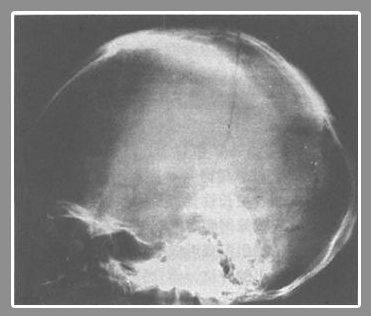
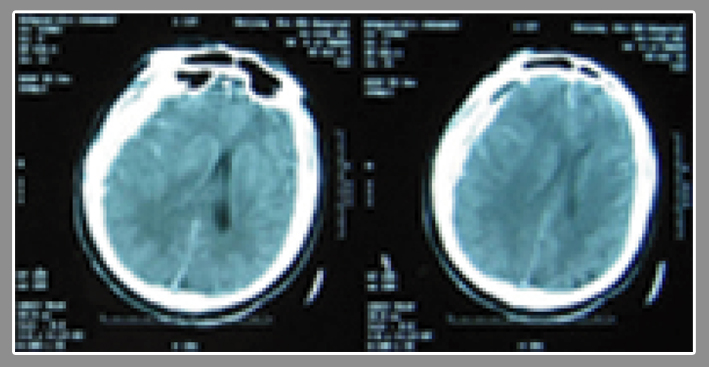
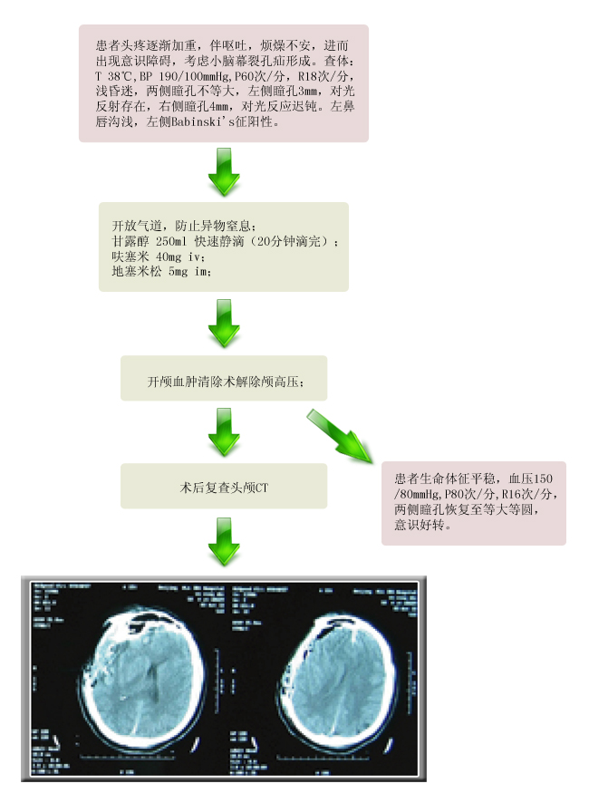

【病例摘要】
- 现病史：男性，23岁，因骑车进行中被汽车撞倒，右颞部着地半小时，到急诊就诊。患者摔倒后曾有约5分钟的昏迷，清醒后，自觉头痛，恶心。
- 既往史：既往体健。否认过敏史。
- 查体：BP 139/80mmHg，P 80次/分，一般情况可，神志清，对答切题，双侧瞳孔等大同圆，对光反射存在，双侧鼻唇沟对称，口齿清楚，双侧Babinski征阴性，其他神经系统检查均未见明显阳性体征。

【辅助检查】
- 头颅X片
 - 头颅CT

【诊断】
- 1. 颅骨骨折
- 2. 右额、颞、顶脑挫裂伤
- 3. 右额、颞、顶急性硬膜下血肿
【事件】
